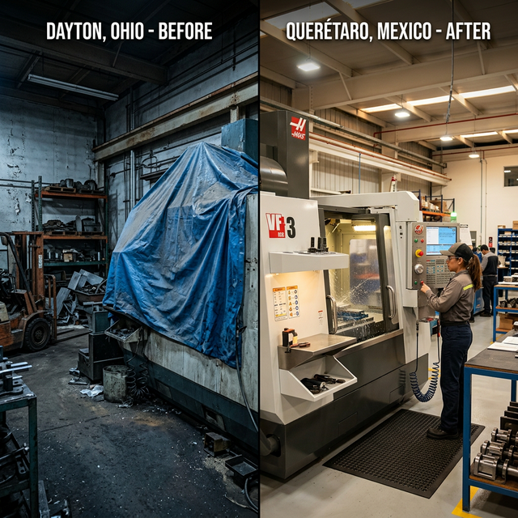

Disclaimer: This is a fictional market scenario designed to illustrate the structural dynamics of AI-brokered consortium assembly. The characters, companies, and events are invented. The market forces, the capability gaps, and the platform architecture are real.
If you’ve ever managed a manufacturing plant, you know the machine. It’s the one at the back of the floor, pushed against the wall after the last retooling, covered with a blue polytarp that’s been gathering dust for fourteen months. It works. There’s nothing wrong with it. It just doesn’t fit the new process.
Maybe it’s a five-axis CNC machining center you bought for a product line that got redesigned. Maybe it’s a coordinate measuring machine whose tolerance spec is overkill for your current production. Maybe it’s an injection molder with a clamping force you no longer need.
Whatever it is, it’s sitting on $80,000 to $200,000 of depreciating value, and you would love to sell it. You’ve thought about it more than once. But here’s the problem: who do you sell it to?
You could list it on a used equipment marketplace. There are several — EquipNet, Machinio, BidSpotter. You’d post a few photos, write a description, specify the make, model, and year. And then you’d wait, because the buyer who actually needs this specific machine — with this spindle speed, this tool capacity, this control system, in this condition — is not browsing these platforms the way someone browses Amazon. They’re looking for a machine that fits a precise set of requirements defined by their production process, and no amount of keyword filtering can tell them whether your machine fits. For that, they’d need to read a significant portion of the 180-page technical manual. And they won’t do that speculatively, for a machine they’re not sure about, listed by a seller they’ve never met.
So the machine stays under the tarp. And somewhere — maybe Windsor, maybe Barrie, maybe Thunder Bay — a manufacturer who needs exactly that machine is either paying full price for a new one, or making do with equipment that doesn’t quite fit, because the secondary market is too opaque to navigate.
This is not a failure of willpower. It’s a thin market problem — and it’s one of the most economically wasteful ones I’ve encountered.
To illustrate what an AI-mediated matching platform could do about it, here is a scenario.
1. Frank’s Problem
Frank Kowalski is the plant manager at a mid-size precision parts manufacturer in Stratford, Ontario. The company makes aerospace-grade aluminum components — housings, brackets, structural fittings — for two Tier 1 suppliers. Eighteen months ago, they redesigned their primary product line to consolidate three part families into one, which meant retooling the floor.
The retooling left Frank with a Mazak Variaxis i-700 — a five-axis CNC machining center with a 30,000 RPM spindle, 40-tool automatic changer, Mazatrol SmoothX CNC control, and a work envelope designed for complex contoured surfaces on parts up to 700 mm diameter. It’s a $340,000 machine new. Frank’s is six years old, 11,000 spindle hours, well-maintained, with full service records. He estimates it’s worth $130,000–$150,000 on the secondary market.
He’s tried. He listed it on Machinio eight months ago. He got three inquiries — two from brokers who wanted to pay $40,000 and flip it, and one from a buyer in Turkey who disappeared after asking for the manual. No one who actually needed a five-axis machine with these specific capabilities for their production process.
The machine sits under a tarp near the loading dock. Frank’s operations team walks past it every day. It bothers him.
This morning, Frank gets a call from a representative of AMT — the Association for Manufacturing Technology — about a new initiative. AMT has partnered with a regional manufacturing extension partnership to launch a platform for secondary equipment matching. The representative explains that the platform uses AI to analyze technical documentation and match equipment capabilities to buyer requirements. Frank is skeptical, but the machine is still under the tarp. He agrees to try.
The onboarding takes twenty minutes. Frank starts with the obvious uploads: the machine’s technical manual — all 184 pages — the maintenance log, and three photos taken on his phone. But then the platform asks a question that no used equipment listing has ever asked him: What has this machine actually made?
Frank realises he has a lot to offer. He uploads the SOPs and training programs his team developed for the Variaxis — documentation that shows the machine was operated by trained personnel following established procedures, not run ragged by untrained operators. He uploads the complete maintenance history as PDFs: every spindle bearing inspection, every way cover replacement, the through-spindle coolant pump he replaced eight months ago. He uploads technical drawings of parts the machine has produced — complex contoured aluminum housings with thin walls and tight-tolerance bore features — along with photos of finished parts showing surface quality that no spec sheet could convey.
And then he uploads the data that changes everything: CMM inspection reports from production runs. Coordinate measuring machine data showing that this Variaxis has held ±0.015 mm on critical dimensions across thousands of aluminum aerospace parts — documented, measured, traceable.
The platform’s document processing pipeline extracts all of it: the manufacturer’s specification data (spindle speed range, axis configurations, tool changer capacity, maximum workpiece dimensions, control system type and version, coolant system specs, power requirements) and the operational evidence (demonstrated tolerances, production history, maintenance patterns, operator documentation quality). It builds a technical profile that captures not just what this machine was designed to do, but what it has proven it can do — and a gallery listing with the photos, a summary description, and Frank’s asking price.
Frank’s private data — his pricing flexibility, his timeline urgency, his willingness to arrange rigging and logistics — stays in a matching layer visible only to the platform’s AI, never shown to buyers.
2. Sofía’s Search
Three hundred kilometres to the southwest, in Windsor, Ontario, Sofía Herrera runs production engineering for a growing automotive parts manufacturer. The company has just won a contract to produce turbocharger housings for a European OEM — complex, contoured aluminum castings that require five-axis finish machining to tolerances of ±0.02 mm.
Sofía needs a five-axis machining center. She needs it within three months. Buying new means a Mazak or DMG Mori at $300,000–$400,000 with a six-month lead time. Buying used could cut the cost by 60% and get the machine on her floor in weeks — if she could find the right one.
She’s been searching. She has a spreadsheet with fourteen listings from three platforms. For each one, she’s tried to determine whether the machine’s specifications match her process requirements: spindle speed sufficient for aluminum at the feed rates her toolpaths require, work envelope large enough for the turbocharger housing blanks, tool changer capacity for the nine-tool sequence her process uses, and a control system her operators can program.
For most listings, she can’t determine this. The listings say “five-axis CNC center” and give a model number. To know whether the machine actually fits, she’d need the full specification sheet — ideally the manual — and an hour with her process engineer to cross-reference the capabilities against her requirements.
She doesn’t have that hour, fourteen times over. And she doesn’t trust that the listings are accurate — condition reports from sellers are self-reported, and she’s heard enough stories about machines that arrive with undisclosed wear on the spindle bearings or outdated control software.
Sofía’s company joined the same platform two weeks ago, through a regional manufacturing competitiveness program run by the Ontario Centre for Innovation. Her onboarding was different from Frank’s: instead of uploading a machine, she described a need. The platform asked her what she’s producing, what tolerances she requires, what materials she’s cutting, what her production volume looks like, and what her budget and timeline are. It built a requirements profile that captures not “five-axis CNC” but the actual production parameters: spindle speed ≥ 20,000 RPM, work envelope ≥ 650 mm, tool capacity ≥ 30, control system compatible with Mazatrol or Siemens, tolerance capability ± 0.02 mm, condition: operational with documented service history.
3. The Match
The platform’s semantic matching engine doesn’t search by keyword. It compares the technical profile extracted from Frank’s machine manual against the requirements profile built from Sofía’s production parameters. The match is structural: spindle speed, work envelope, tool capacity, control system compatibility, documented service history — every parameter meets or exceeds Sofía’s requirements.
The match confidence is high. The platform notifies both parties. Sofía receives a capability match report — a side-by-side comparison of the machine’s extracted specifications against her production requirements, with match/exceed/gap indicators for each parameter. Frank receives notice that a manufacturer in Windsor has requirements his machine has demonstrably met. For the first time in eight months, someone is interested in what his machine has done, not what it costs.
But the match report includes something no new-machine quotation could ever offer: operational proof.
If Sofía bought a new Mazak from the dealer, she would receive a specification sheet — a set of promises about what the machine should be able to do. Spindle runout within a stated range. Positional accuracy within a stated tolerance. Surface finish capability within a stated Ra value. All based on the manufacturer’s engineering data, all true in general, none verified on her specific parts.
Frank’s machine comes with something fundamentally different. The CMM inspection reports from six years of production runs prove that this specific machine, with this specific wear profile, has held ±0.015 mm on aluminum aerospace parts with comparable geometry to Sofía’s turbocharger housings — tighter than her ±0.02 mm requirement. The SOPs and training documentation prove it was professionally operated. The maintenance records prove it was properly cared for. The finished-part photos show surface finishes that no specification sheet can convey.
This is the inversion that makes a well-documented used equipment marketplace structurally valuable: a used machine with a comprehensive operational history is not a lesser purchase than a new one. It is a more known quantity. A new machine arrives with promises. Frank’s Variaxis arrives with proof. Sofía doesn’t have to trust a brochure. She can read the CMM data.
This principle applies to virtually any category of used industrial equipment. A documented used machine is a “tried and tested” machine with “known and well-documented performance.” That cannot be underestimated as a new category of market value — and it can only be realized if the marketplace’s AI can ingest, interpret, and match on the full depth of technical documentation that constitutes the proof.
The platform also generates a brief transaction summary alongside the capability match report — an outline of the inspection sequence, rigging and freight logistics, pricing benchmark relative to new, and warranty transfer options — giving both Frank and Sofía a shared picture of what the next two to three weeks would look like before either composes their first message.
4. What the Platform Knows
When AMT and the regional MEP configured the platform, they populated the CommonContext — the sponsor-curated reference library — with vertical-specific information that neither Frank nor Sofía would easily find on their own:
- Valuation benchmarks: depreciation curves for CNC equipment by brand, model, age, and spindle hours — data typically locked inside appraisal firms and auction houses
- Inspection and certification protocols: what an independent machine inspection covers (geometric accuracy tests, spindle runout measurement, ballbar testing), who provides certified inspections in Ontario, and what documentation a buyer should require
- Heavy machinery logistics: rigging companies, flatbed carriers with air-ride suspension, and freight forwarders experienced in moving 8,000 kg machine tools — the specialized knowledge that determines whether a precision machine arrives in calibration or arrives as scrap
5. The Deal
Over five days in a match-scoped communication channel, Frank and Sofía exchange additional verification — a ballbar circularity test (4.2 microns, well within tolerance), coolant system photos, control software details. The platform tracks every exchange, building the documentation trail that supports the eventual agreement.
When both parties are ready, the platform assembles the full transaction structure: an independent machine tool inspector in Stratford for the pre-purchase condition assessment; a rigging company and air-ride carrier for the move; and pricing guidance from the CommonContext’s valuation benchmarks, suggesting $120,000–$155,000 for a Variaxis i-700 at this age and condition. The complete deal structure — principals, facilitators, inspection requirements, logistics timeline — is assembled in a Handoff Artifact. The platform then steps back, allowing Frank and Sofía to review the artifact, finalize the price, and execute the actual contract offline directly with each other.
6. What Makes This a Shadow Capacity Story
Frank’s Variaxis has been shadow capacity for fourteen months. Not broken, not obsolete — invisible. A $340,000-new machine, worth $130,000–$150,000 with full documentation, depreciating under a polytarp because no marketplace can read its technical manual. Meanwhile, Sofía in Windsor is about to spend $350,000 on a new machine with a six-month lead time — buying promises when proof exists 300 kilometres away.
This is the paradox of shadow capacity in used equipment: a documented machine with CMM data, maintenance records, and production evidence is actually a more known quantity than a new one. A new machine arrives with a specification sheet — a set of promises. Frank’s arrives with proof. But that proof has zero value if no marketplace can ingest it, interpret it, and match it against a buyer’s production parameters.
Information asymmetry — The platform doesn’t just close the information gap — it inverts it. A documented used machine is more transparent than a new one. Discovery — Frank in Stratford and Sofía in Windsor, 300 kilometres apart, had no mechanism to find each other; listing platforms match by category, not by production capability. Trust — Independent inspection and a documented communication trail build verifiable trust without requiring either party to take the other’s word. Deal complexity — Rigging, freight, inspection, and service transfer require coordination neither party can provide alone.
The tarp comes off. But how many more machines are still under tarps across Ontario, shadow capacity trapped by marketplace opacity?
This is part 7 of the series Recapturing Shadow Manufacturing Capacity in Ontario. For more on the structural dynamics of thin markets, see The Problem and the Intervention Matrix.